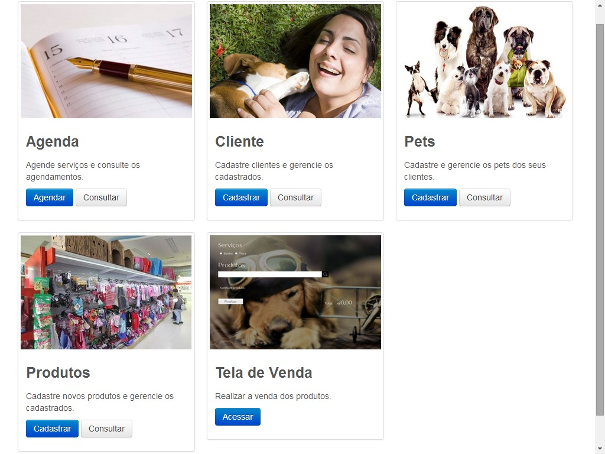
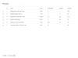
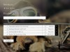
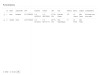
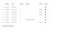

http://snoopdogpets.hol.es/
http://snoopdogpets.hol.es/adm
2013
O site foi criado com o propósito de servir como parte de um trabalho acadêmico onde deveria ser colocada em prática os fundamentos de Modelagem de Sistemas. O tema utilizado no trabalho era uma Petshop, portanto foi desenvolvido um sistema de gerenciamento de uma Petshop.
Na construção do site foram usadas as seguintes linguagens e ferramentas:
1. Ajax foi utilizado somente na página de vendas, especificamente no campo de pesquisa para que os dados fossem buscados enquanto o usuário digita, possibilitando assim que sugestões sejam mostradas.
2. Google Fonts foi utilizado na página de vendas para importar a fonte Lato diretamente do serviço oferecido pelo Google.
|  | ||
|  |  | |
|  |